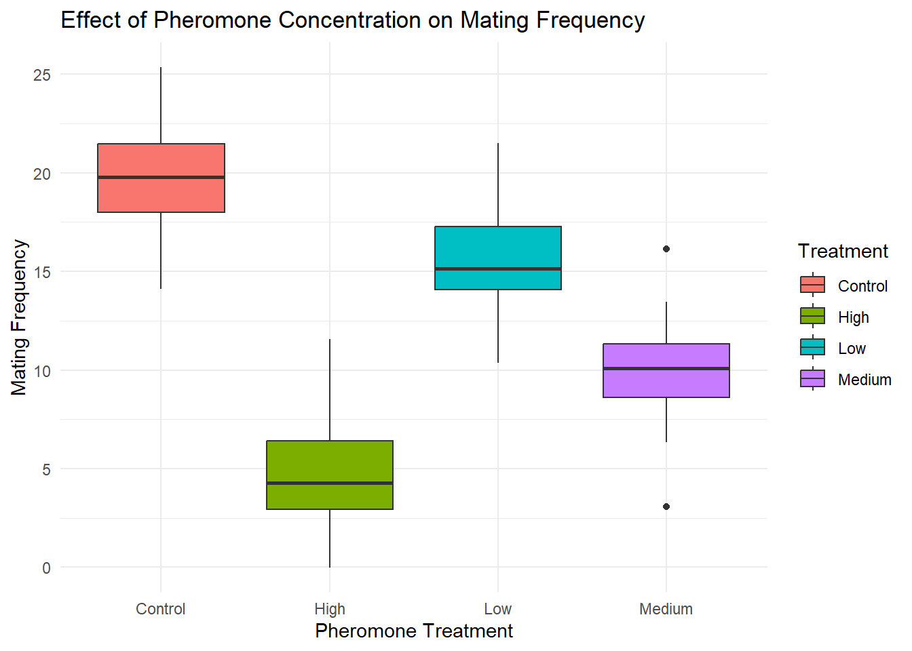

Home Work 6 - Creating Fake Data Sets To Explore Hypotheses
Vincent Tamakloe
2025-02-19
Generating Simulated Data Sets To Explore Hypotheses
Introduction
In this assignment, I will simulate a dataset to explore an experimental hypothesis related to insect pheromone communication in pest management. Specifically, I will investigate how varying pheromone concentrations affect mating behavior in the swede midge (Contarinia nasturtii), assuming that mating frequency is normally distributed across treatment groups.
Hypothesis
I hypothesize that increasing pheromone concentration will reduce
mating frequency. I simulate four treatment groups:
-Control group: baseline mating frequency
-Low pheromone: slightly reduced frequency
-Medium pheromone: moderate reduction -High pheromone:
strong reduction
Assumed parameters:
- Sample size per group = 30
- Means: Control = 20, Low = 15,
Medium = 10, High = 5
- Standard deviation: 3 for all treatment groups
Data Simulation
set.seed(123) # Ensure reproducibility
# Define sample sizes, means, and standard deviations
sample_size <- 30
treatments <- c("Control", "Low", "Medium", "High")
means <- c(20, 15, 10, 5)
sd <- 3
# Generate random data from normal distributions
data <- data.frame(
Treatment = rep(treatments, each = sample_size),
MatingFrequency = c(
rnorm(sample_size, mean = means[1], sd = sd),
rnorm(sample_size, mean = means[2], sd = sd),
rnorm(sample_size, mean = means[3], sd = sd),
rnorm(sample_size, mean = means[4], sd = sd)
)
)
head(data)## Treatment MatingFrequency
## 1 Control 18.31857
## 2 Control 19.30947
## 3 Control 24.67612
## 4 Control 20.21153
## 5 Control 20.38786
## 6 Control 25.14519Data Visualization
## Warning: package 'ggplot2' was built under R version 4.3.3ggplot(data, aes(x = Treatment, y = MatingFrequency, fill = Treatment)) +
geom_boxplot() +
theme_minimal() +
labs(title = "Effect of Pheromone Concentration on Mating Frequency",
x = "Pheromone Treatment",
y = "Mating Frequency")
ANOVA Analysis
# Perform ANOVA to test for significant differences
anova_model <- aov(MatingFrequency ~ Treatment, data = data)
summary(anova_model)## Df Sum Sq Mean Sq F value Pr(>F)
## Treatment 3 3894 1298.0 178.1 <2e-16 ***
## Residuals 116 845 7.3
## ---
## Signif. codes: 0 '***' 0.001 '**' 0.01 '*' 0.05 '.' 0.1 ' ' 1## Tukey multiple comparisons of means
## 95% family-wise confidence level
##
## Fit: aov(formula = MatingFrequency ~ Treatment, data = data)
##
## $Treatment
## diff lwr upr p adj
## High-Control -15.140356 -16.957227 -13.323484 0e+00
## Low-Control -4.323674 -6.140545 -2.506802 1e-07
## Medium-Control -9.785428 -11.602299 -7.968556 0e+00
## Low-High 10.816682 8.999811 12.633553 0e+00
## Medium-High 5.354928 3.538057 7.171799 0e+00
## Medium-Low -5.461754 -7.278625 -3.644883 0e+00Sample Size Effects
# Function to test different sample sizes
test_sample_sizes <- function(sample_sizes) {
results <- data.frame(SampleSize = numeric(), p_value = numeric())
for (n in sample_sizes) {
new_data <- data.frame(
Treatment = rep(treatments, each = n),
MatingFrequency = c(
rnorm(n, mean = means[1], sd = sd), # Control group
rnorm(n, mean = means[2], sd = sd), # Low pheromone
rnorm(n, mean = means[3], sd = sd), # Medium pheromone
rnorm(n, mean = means[4], sd = sd) # High pheromone
)
)
model <- aov(MatingFrequency ~ Treatment, data = new_data)
p_val <- summary(model)[[1]][["Pr(>F)"]][1]
results <- rbind(results, data.frame(SampleSize = n, p_value = p_val))
}
return(results)
}
# Test sample sizes from 10 to 100 in increments of 10
sample_sizes <- seq(10, 100, by = 10)
sample_size_results <- test_sample_sizes(sample_sizes)
print(sample_size_results)## SampleSize p_value
## 1 10 1.230876e-11
## 2 20 6.626228e-27
## 3 30 1.102190e-38
## 4 40 6.430344e-52
## 5 50 2.470532e-68
## 6 60 4.835158e-75
## 7 70 5.829418e-91
## 8 80 9.364952e-107
## 9 90 5.731405e-109
## 10 100 1.273503e-141Visualize the p_value ~ SampleSize relationship:
ggplot(sample_size_results, aes(x = SampleSize, y = p_value)) +
geom_line() +
geom_point() +
geom_hline(yintercept = 0.05, linetype = "dashed", color = "red") +
theme_minimal() +
labs(title = "Effect of Sample Size on Statistical Significance",
y = "ANOVA p-value",
x = "Sample Size per Group")
Conclusion
This simulation shows that increasing pheromone concentrations reduce mating frequency in swede midge, supporting the hypothesis. It also illustrates the importance of sample size: smaller samples increase variability and reduce statistical power, while larger samples yield more consistent results. Future studies could explore alternative statistical models, such as negative binomial regression, to account for overdispersion in count data.
Overall, the exercise reinforces key concepts in experimental design and the role of statistical rigor in ecological research.